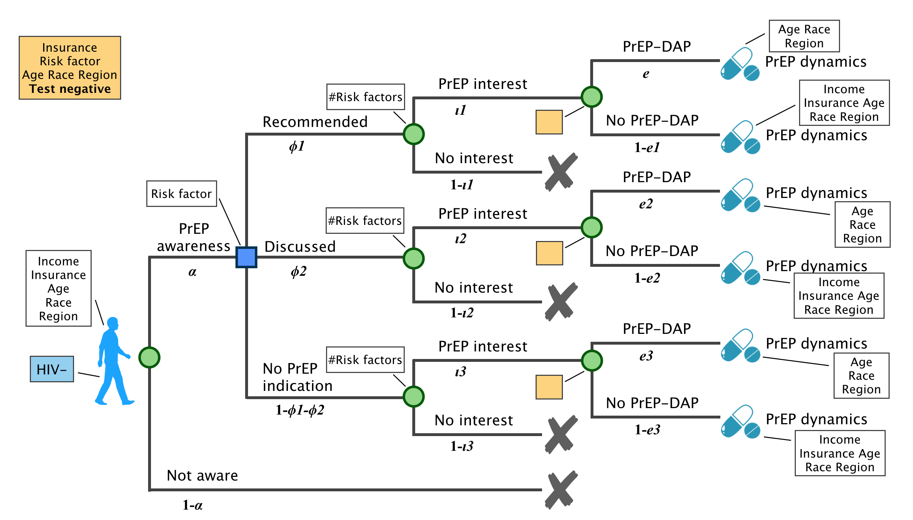
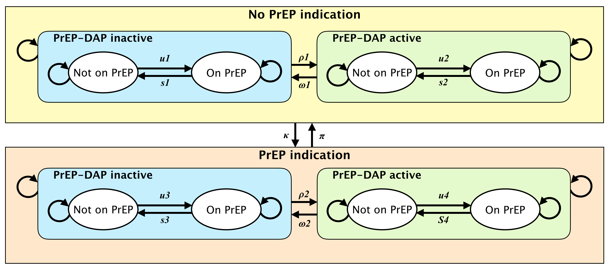

People Who Do Not Have HIV
Washington State PrEP-DAP
- Goal is to support access to PrEP for at-risk HIV-negative individuals
- Fully state funded; Washington state was the first to implement
- Gilead (pharmaceutical company) already provides patient drug co-pay assistance
- Up to $7,200 per year (effective Sept. 1, 2018) for privately-insured
- PrEP-DAP Benefits:
- Provides assistance in enrolling in Medicaid for those who are eligible
- Provides assistance in enrolling in Gilead patient assistance programs
- Pays client-cost of lab tests and medical visits needed for PrEP use (quarterly HIV/STI testing, kidney function, etc.)
- Pays PrEP co-pays once Gilead benefit is exhausted
- Enrollment criteria: Eligibility
- Income: no restriction
- Insurance: cannot receive Medicaid or be eligible for Medicaid
- Must obtain negative HIV test result within 14 days
- Prescription: providers are required to certify the prescription
- PrEP indication is based on risk factors:
- Test positive for STIs (gonorrhea, chlamydia, and syphilis) in the last 12 months
- Unprotected sex outside of mutually monogamous relationship
- HIV+ partners
- Recertification criteria:
- Frequency of recertification: every year
- Test: test HIV- in the past 90 days
- Proof of taking PrEP: NA
PrEP-DAP and care continuum
- Recommended: PrEP is recommended for people who meet the following criteria:
- Diagnosed with rectal gonorrhea or syphilis in the past 12 months.
- Ongoing sexual relationships with HIV+ partners who are not virally suppressed or not on ART
- Discussed: Providers should discuss use of PrEP with a person who meets the following criteria:
- Have unprotected sex outside of mutually monogamous partnerships with a man who is HIV-.
- Diagnosed with gonorrhea or chlamydia in the past 12 months.
- Ongoing sexual partnerships with HIV+ who are virally suppressed.
- No PrEP indication: does not meet criteria for "Recommend" or "Discuss"
- Only individuals who are aware of and interested in PrEP can be enrolled in PrEP-DAP
- PrEP-DAP modifies the PrEP dynamics.

Parameters
Note: in the WHPP summary, they split people up first by indication and then by awareness + interest. That may make more conceptual sense. Also, since R/D/N is evaluated at each time step, we might want to put that first.
| Label | Parameter | Data Source | Stratification | Question |
|---|---|---|---|---|
| PrEP Awareness, Indication, Interest | ||||
| a | Percentage of HIV- people who are aware of PrEP | WHPP | Race, income, insurance, region | ? |
| φ1 | Percentage of those aware for whom PrEP is recommended | WHPP | Race, income, insurance, region | ? |
| φ2 | Percentage of those aware for whom PrEP should be discussed | WHPP | Race, income, insurance, region | ? |
| t1, t2, t3 | Percentage of people with each indication who are interested in taking PrEP | WHPP | Race, income, insurance, region | ? |
| PrEP DAP | ||||
| e1, e2, e3 | Percentage of interested people with each indication who are enrolled in PrEP DAP | WHPP | Race, income, insurance, region | ? |
PrEP and PrEP-DAP dynamics

- In the PrEP dynamics, we considered PrEP indication dynamics and PrEP-DAP dynamics.
- Changes in PrEP indication dynamics are resulted in changes in partnerships and STI dynamics.
- In addition to the changes in partnerships and STI dynamics, PrEP-DAP dynamics might also depend on and the behaviors of meeting the requirements of the program.
Parameters
| Label | Parameter | Data Source | Stratification | Question |
|---|---|---|---|---|
| PrEP indication dynamics | ||||
| κ | based on risk behavior, whether PrEP is R/D/N | NA; determined for each person in model | depends on risk behavior for each group | ? |
| π | opposite of κ | "" | "" | "" |
| PrEP-DAP dynamics | ||||
| ρ1, ρ2 | Rate of entering PDAP based on indication and PDAP=TRUE | ? | ? | BIG QUESTION HERE |
| ω1, ω2 | Rate of leaving PDAP | Claims data; calculated from duration of enrollment | Race, income, insurance, PrEP indication | ? |
| PrEP dynamics | ||||
| u1, u2, u3, u4 | Weekly probability of initiating PrEP | WHPP, claims data (?) | PDAP status, PrEP indication, race, income, insurance | ? |
| s1, s2, s3, s4 | Weekly probability of discontinuing PrEP | WHPP, claims data (?) | PDAP status, PrEP indication, race, income, insurance | ? |
Questions
- Does everyone immediately initiate PrEP after enrollment?
- Are there records of diagnosed date prior to enrollment?
PrEP-DAP cost
- Client costs
- Copays, coinsurance, and/or deductible for:
- PrEP medication, after Gilead benefits are exhausted
- Medical and lab visits
- STI treatment
- Other relevant healthcare (selective services)
- Copays, coinsurance, and/or deductible for:
- Assessment cost
- Overhead
Questions
- On average, what is the ratio of enrollments to applications for PrEP-DAP in a year?